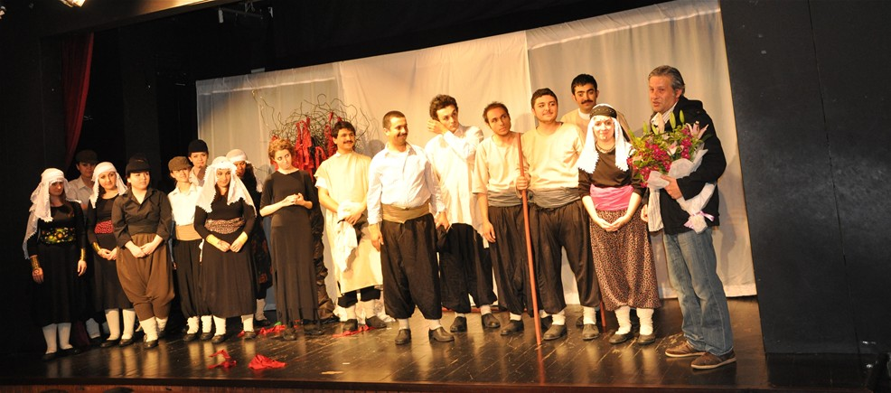

Gençliğim ve Kariyer Başlangıcım
Gençken büyük bir hayaldi benim için bilinen biri olmak. Mardin’de hep babam İsmail Mungan’ın oğlu olarak biliniyordum. Kendisi politikacyıdı, Mardin’i temsil ediyordu. Gurur meselesi yapmıştım bunu daha küçükken. Babamın konuşmaları sonrası aldığı alkışı çalmak değil, kendim alkışlanmak istiyordum. Mardin’deki gençliğim okula gidip eve dönmekten ibaretti. Ailem beni tek başıma sokaklara salacak kadar güvende hissetmiyordu, aynı durum benim için de geçerliydi. Ben de eve dönünce kitaba verirdim kendimi. Kitaplar beni yaşadığım dünyadan uzaklaştırır, apayrı dünyalara götürürdü. Mardin’in orada çok fazla sanatçı veya edebiyatçı gelmiyordu o yüzden birnin geldiğini öğrendiğimde de günleri sayardım. Zamanla beraber edebiyata olan sevgim artmaya devam etti. Lisenin sonlarına doğru da ben yazarak istediğim hayata ve amaçlara ulaşabileceğime inanır oldum. Bu inanç hayatım boyunca devam etti, gururuma ulaşabilmek, geçmişimi anlatabilmek ve fark yaratabilmek için en ideal yaşam tarzıydı bu. Geçmişim her ne kadar ideal olmasa da yazarlık iyisiyle kötüsüyle benim bu hayallerin peşinden koşmama, kimisine de ulaşmamı sağladı. Yukarıdaki resimde de ilk yazdığım kitap olan Mahmut ile Yezida'nın tiyatroya uyarlanmış halinden bir kare görebilirsiniz.